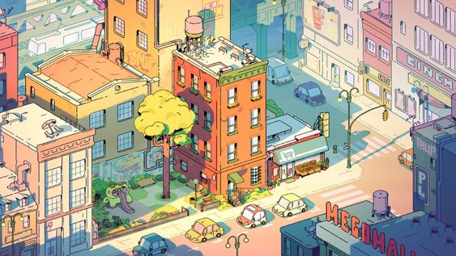

Effects on the Environment
Climate change significantly impacts the environment by altering weather patterns, leading to more frequent and severe natural disasters such as hurricanes, floods, and droughts. Rising global temperatures cause polar ice caps and glaciers to melt, resulting in rising sea levels that threaten coastal ecosystems and human settlements. Additionally, changes in temperature and precipitation disrupt habitats, putting many plant and animal species at risk of extinction. Ecosystems face further stress from ocean acidification, which affects marine life, particularly coral reefs. Overall, climate change creates a cascade of environmental challenges that threaten biodiversity and the stability of our planet's ecosystems.
Effects on Society
Climate change poses profound impacts on society, affecting public health, livelihoods, and community resilience. As extreme weather events become more frequent, vulnerable populations face increased risks of displacement and loss of property. Food security is threatened by shifting agricultural conditions, leading to reduced crop yields and higher prices. Public health risks also rise, with more heat-related illnesses, respiratory issues from poor air quality, and the spread of vector-borne diseases. Additionally, social inequalities may deepen as marginalized communities disproportionately bear the brunt of climate impacts, exacerbating existing disparities. Overall, climate change challenges societal stability, requiring urgent action to adapt and mitigate its effects.